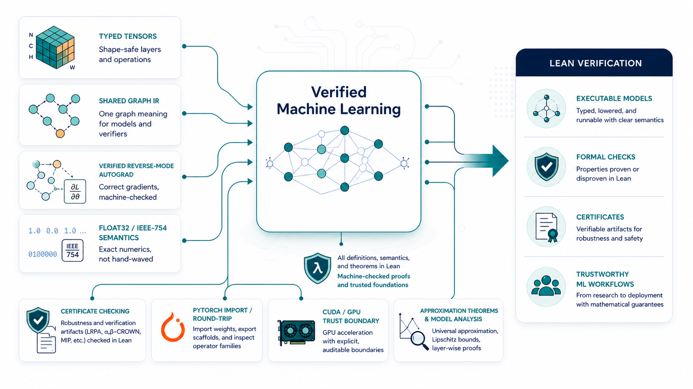

Abstract
Neural networks are increasingly deployed in safety- and mission-critical pipelines, yet many verification and analysis results are produced outside the programming environment that defines and runs the model. This separation creates a semantic gap between the executed network and the analyzed artifact, so guarantees can hinge on implicit conventions such as operator semantics, tensor layouts, preprocessing, and floating-point corner cases. We introduce TorchLean, a framework in the Lean 4 theorem prover that treats learned models as first-class mathematical objects with a single, precise semantics shared by execution and verification. TorchLean unifies (1) a PyTorch-style verified API with eager and compiled modes that lower to a shared op-tagged SSA/DAG computation-graph IR, (2) explicit Float32 semantics via an executable IEEE-754 binary32 kernel and proof-relevant rounding models, and (3) verification via IBP and CROWN/LiRPA-style bound propagation with certificate checking. We validate TorchLean end-to-end on certified robustness, physics-informed residual bounds for PINNs, and Lyapunov-style neural controller verification, alongside mechanized theoretical results including a universal approximation theorem. These results demonstrate a semantics-first infrastructure for fully formal, end-to-end verification of learning-enabled systems.
